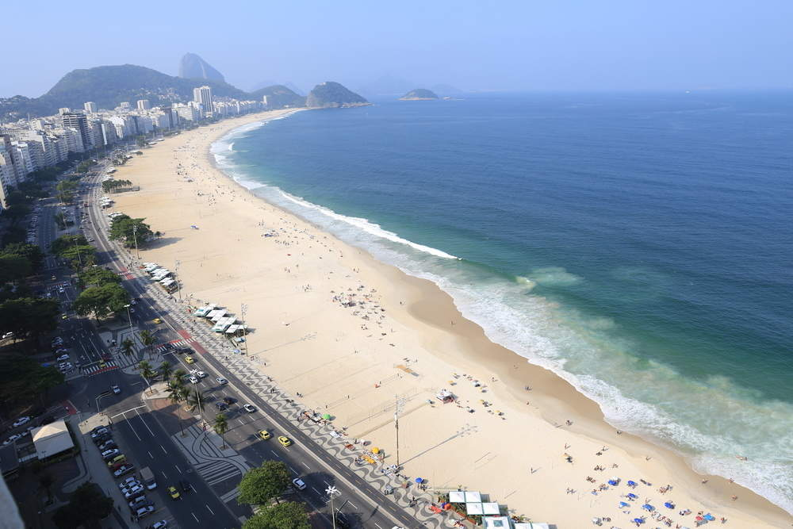
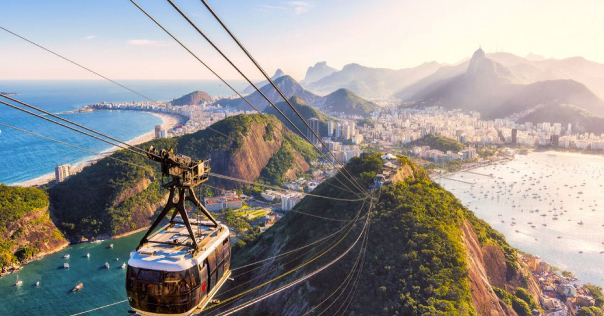
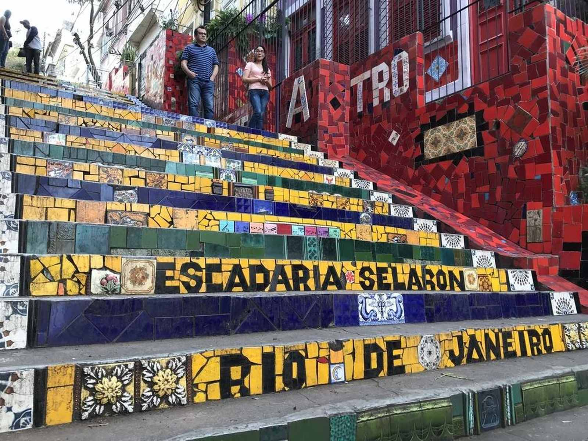
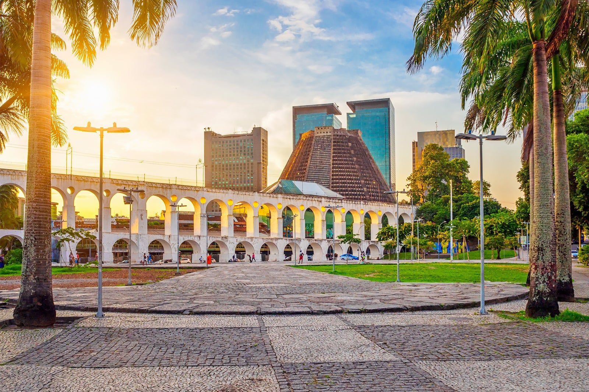
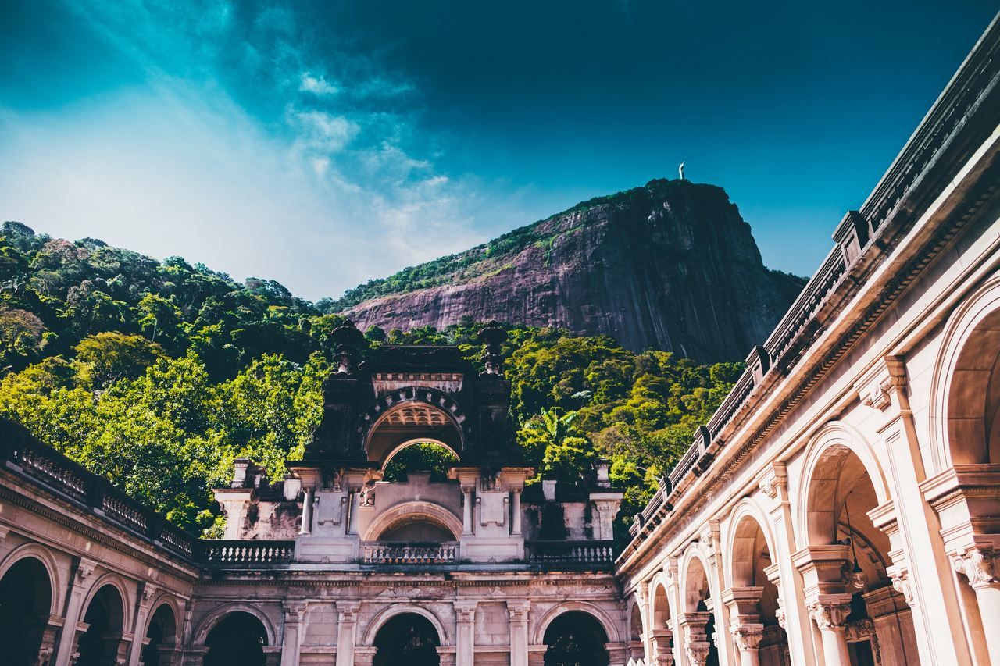
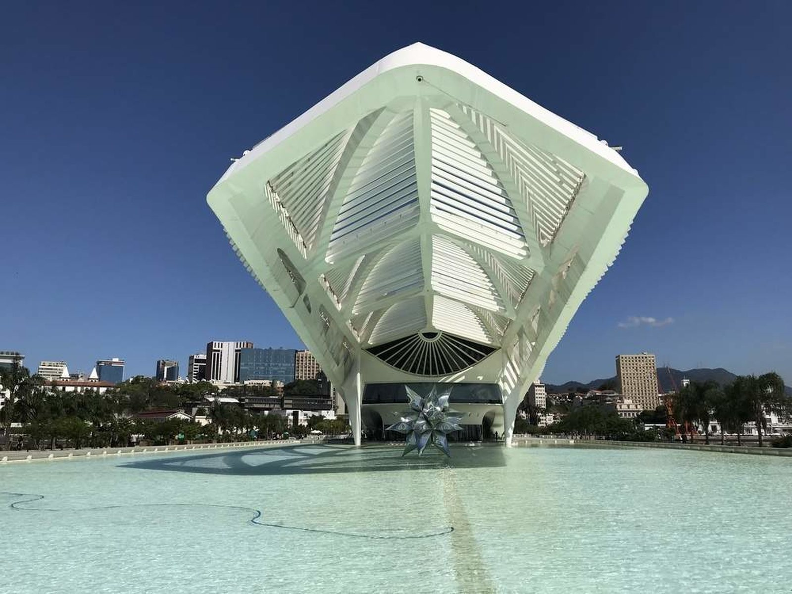
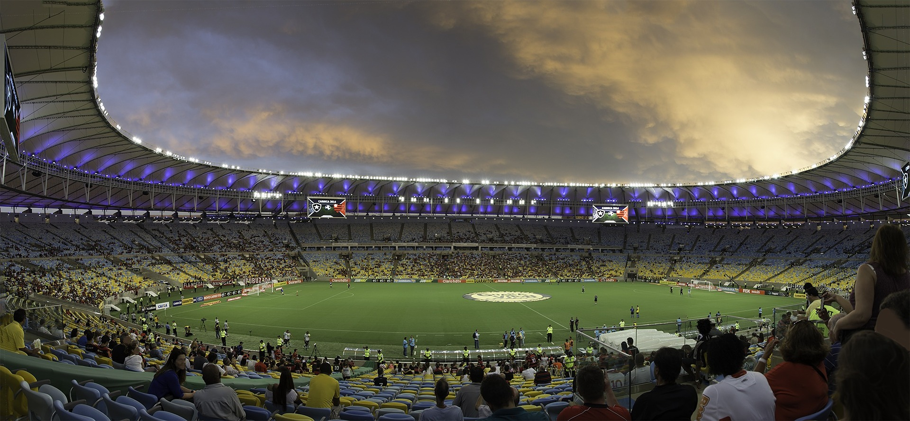
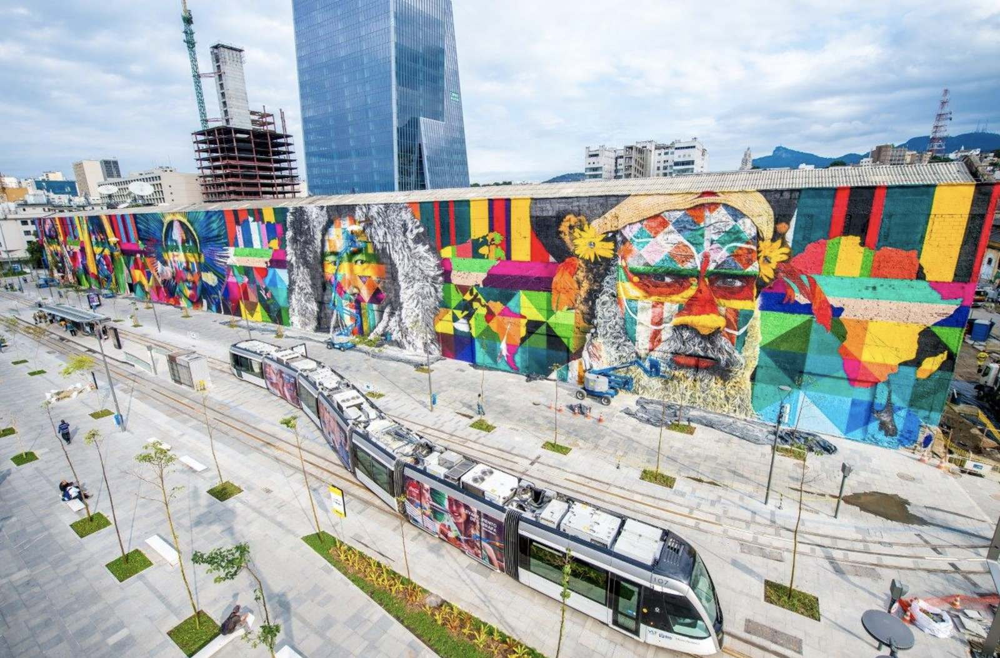

Literalmente de braços abertos, o Cristo Redentor, no morro do Corcovado, recebe diariamente milhares de turistas de diversos lugares do mundo. É necessário subir 700 metros do nível do mar para, enfim, chegar ao pico onde está a estátua que é cartão postal da cidade. O Cristo Redentor fica dentro do Parque Nacional da Tijuca e existem duas maneiras de chegar: nas vans autorizadas do Paineiras, que saem de diversos pontos do Rio, e no trem do Corcovado.

As melhores praias do Rio de Janeiro atraem visitantes do mundo inteiro. A imensidão do mar carioca é o grande cartão de visita e entra no roteiro de viagem de todos os turistas. O clima quente da região sem dúvida pede um mergulho ao mar. Na Zona Sul ficam as praias mais procuradas pelos turistas que visitam o Rio de Janeiro: Leblon, Ipanema e Copacabana. São praias que podem ser interessantes para diferentes atividades, desde um mergulho no mar até mesmo para caminhar ou pedalar pela orla aproveitando o som das ondas. E é na Zona Oeste que estão as praias mais apropriadas para o surf. Por serem menos conhecidas, podem ter menos concorrência do que as praias da Zona Sul, geralmente mais requisitadas. A Barra da Tijuca é uma opção muito interessante, que conta inclusive com estrutura e vários quiosques. Em sua extensão, a praia da Barra se torna Praia da Reserva, com pouquíssimo movimento. A praia do Recreio, também extensa, é outra boa opção para curtir um dia de sol na região.

O Bondinho do Pão de Açúcar está entre os principais pontos turísticos do Rio de Janeiro e foi inaugurado em 1912, sendo o primeiro teleférico do Brasil e o terceiro no mundo. Ele liga o Morro da Urca ao Morro do Pão de Açúcar – e mais de 40 milhões de pessoas já andaram nos bondinhos. Lá do alto é possível encontrar uma deslumbrante paisagem da cidade, incluindo a enseada de Botafogo, a orla de Copacabana e a entrada da Baía de Guanabara. Vale a pena colocar um dos cartões postais da cidade no seu roteiro.

A Escadaria Selarón fica no Rio de Janeiro, entre os bairros de Santa Teresa e Lapa. É uma obra arquitetônica decorada pelo artista chileno Jorge Selarón, que a declarou uma homenagem ao povo brasileiro. A visita não custa nada e realmente merece a sua atenção por ser um lugar bem bonito. Além disso, o local aparece em diversos videoclipes da música mundial, por exemplo, entre artistas como U2 e Snoop Dogg.

A Lapa é um bairro do Rio de Janeiro conhecido por ser boêmio e vibrante, com diversos bares tradicionais, casas noturnas com música ao vivo, salões de dança e rodas de samba ao ar livre abaixo dos Arcos da Lapa, um aqueduto em estilo romano que você deve aproveitar para fotografar. Há opções para todos os bolsos. É possível tomar um copão de caipirinha comprando em barraquinhas de rua por R$ 15, como você também pode pedir o drink em algum bar mais arrumadinho por ali. Fique atento! Na alta temporada de verão, muita gente procura um bar com cerveja gelada para se refrescar do calor carioca e a disponibilidade de mesas pode ficar limitada, com necessidade de reservas.

Há quem diga que é onde está a vista mais bonita do Rio de Janeiro. O acesso é feito pelo mesmo caminho que dá no Corcovado, basta seguir a placa do Mirante. O local não tem policiamento, portanto priorize visitas durante o dia, quando há mais movimento. No mesmo espaço, do lado oposto ao mirante, há um heliporto que possui também uma vista de tirar o fôlego.

O Parque Lage do Rio de Janeiro está localizado aos pés do Morro do Corcovado e encanta com seus 52 hectares de puro verde, programas culturais e arte. Sua estrutura é bem bonita, sem contar a paisagem cercada de muito verde e animais nativos da Mata Atlântica. O parque tem entrada gratuita, inclusive para os vários macaquinhos que livremente transitam por lá.

O Museu do Amanhã foi inaugurado em dezembro de 2015 e já recebeu mais de 3 milhões de visitantes até então, aparecendo entre os mais queridos pontos turísticos do Rio de Janeiro. Ele é voltado para ciências e tecnologia, explorando as oportunidades e os desafios que a humanidade terá de enfrentar nas próximas décadas a partir das perspectivas da sustentabilidade e da convivência.

Cenário de grandes clássicos do futebol mundial, o Maracanã já recebeu tantos momentos históricos que virou ponto turístico no Rio de Janeiro. Entre eles, o milésimo gol de Pelé em 1969, que aconteceu no templo do futebol brasileiro. Se você gosta de futebol, é importante colocar no seu roteiro. É possível comprar a visita guiada ou simplesmente assistir a uma partida, que também já possibilita o acesso e garante a emoção de ver uma partida oficial. Dê preferencia a jogo em dia de clássico carioca para sentir a emoção!

O Mural Etnias é uma expressão artística realizada por meio do grafite num muro da região central do Rio de Janeiro. São 15 metros de altura e 170 metros de comprimento pintados pelo artista Eduardo Kobra na fachada de um antigo armazém. Para encontrá-lo basta procurar a Parada dos Navios/Valongo do VLT Carioca, na Orla Conde. O muro estará em frente! O principal tema é a união dos povos da terra e da diversidade dos grupo étnicos dos cinco continentes, relacionado às Olimpíadas de 2016, quando o grafite foi feito. O mural é batizado como “Todos somos um”.